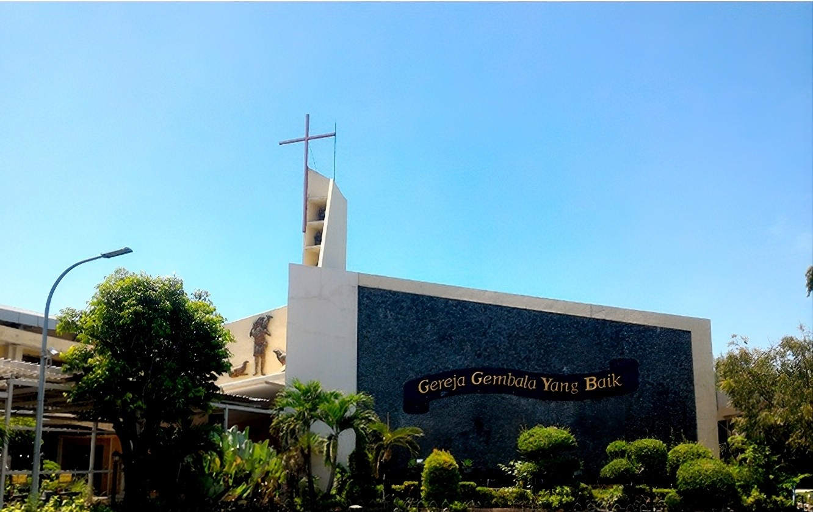
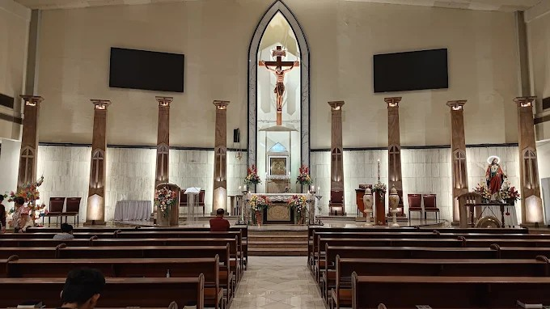
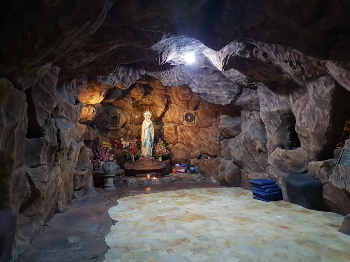

Gereja Katolik Gembala Yang Baik Surabaya

Tentang paroki
Satu keluarga umat,
satu Gembala
Gereja Gembala Yang Baik diberkati pada 14 September 1982 dan pada hari yang sama diresmikan sebagai paroki. Letaknya di Jl. Jemur Andayani, Siwalankerto, Kecamatan Wonocolo, Surabaya.
Siapa pun boleh datang, untuk mengikuti misa, berdoa sebentar di Gua Maria, atau mengurus keperluan sakramen. Pintu sekretariat terbuka bagi semua umat.
Perayaan Ekaristi
Jadwal Misa
Semua jam dalam WIB. Jadwal hari ini diberi tanda.

Intensi & ujud doa
Titipkan doa Anda
Tulis nama, intensi, dan tanggal misa lewat WhatsApp GYB atau sampaikan ke sekretariat. Untuk misa harian, kirim sebelum pukul 12.00 WIB.
Kirim lewat WhatsAppIkuti kabar paroki
Tonton & Ikuti
Video perayaan di YouTube, kabar harian di Instagram dan Facebook.
Paroki GYB
Kanal resmi Gereja Katolik Paroki Gembala Yang Baik Surabaya.
Buka kanal Instagram@komsos.gyb
Komunikasi Sosial GYB: kabar, dokumentasi kegiatan, dan pengumuman.
Buka Instagram Instagram@omkparokigyb
Orang Muda Katolik Paroki GYB: kegiatan dan kabar OMK.
Buka Instagram FacebookParoki GYB Surabaya
Halaman Facebook Paroki Gembala Yang Baik Surabaya.
Buka FacebookPersembahan
Donasi
Pilih rekening sesuai tujuan persembahan Anda.